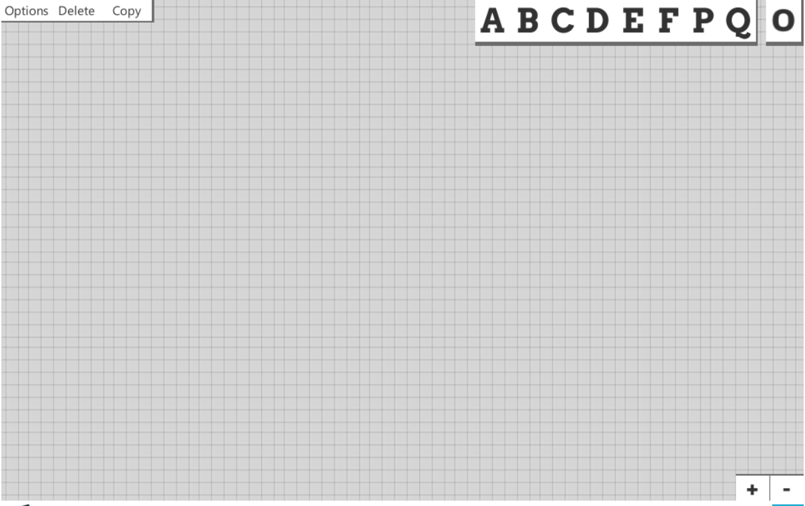

Visual Logic
Visual Logic is a program to represent Existential Graphs, a visual notation for logic expressions developed by Charles Sanders Peirce. It can be used for learning formal logic by creating and working with proofs. It is an open source project, licensed under the Apache-2.0 license.
Quick Start
- Left click + drag to move around variables and cuts
- Left click + drag on a cut's black border to scale it
- Shift + left click to select multiple cuts and variables
- The delete button will delete cuts and variables on left click
- The copy button will copy the first selected cut into the second selected cut
- You can zoom in with either the scroll wheel or the +/- buttons
- You can scale a cut with the scroll-wheel while having the mouse over it
- The current variable/object your mouse is on will be highlighted blue
- The option menu:
- *Open File: Open and load a file into Visual Logic
- Enter expression: Write a statement in propositional logic to display as an Existential Graph
- *Record: record all the actions taken and create a GIF
- New: reset the scene (deletes all progress so far)
*These options are not available in the web version of visual logic yet
Interface
Visual Logic has a sandbox environment for manipulating proofs. New variables and cuts can be added by either clicking on the variable drawer on the top right. You can either click to create a new object at the center of the screen, or you can click and drag from the variable drawer.
Once a variable has been created, it has been placed onto the 'sheet of assertion'. This asserts the variable to be true. Asserting multiple variables at once is like a conjunction. You can negate a variable by drawing a cut around them. Cuts are created the same way from the variable drawer just like variables.